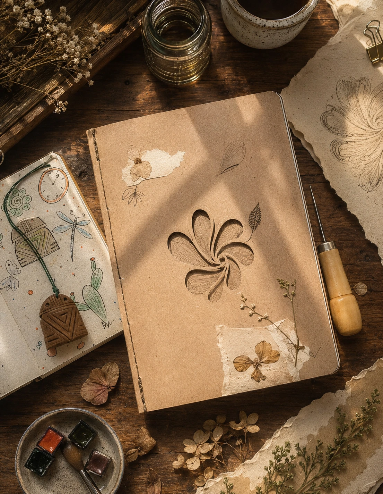
1. Atelier de Bolso
Uma experiência artesanal que une encadernação, escrita e desenho para transformar o cotidiano em um espaço de criação e cuidado.
Cada projeto é um convite para respirar, criar, imaginar e construir novas formas de estar no mundo.
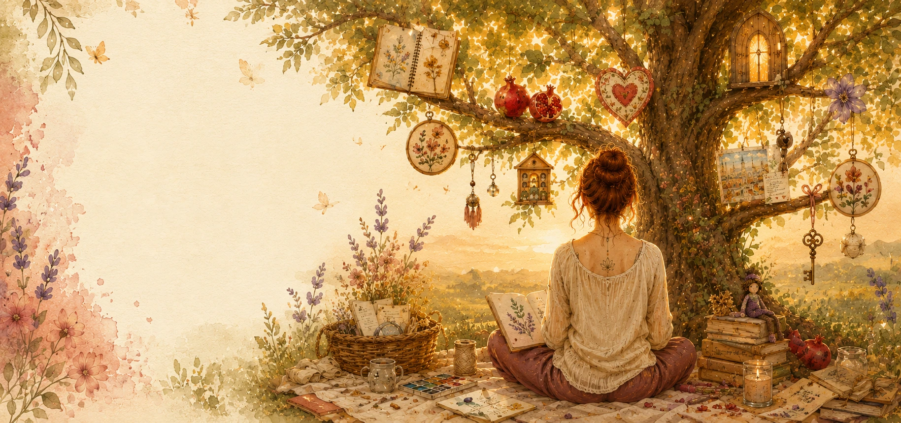

Uma experiência artesanal que une encadernação, escrita e desenho para transformar o cotidiano em um espaço de criação e cuidado.
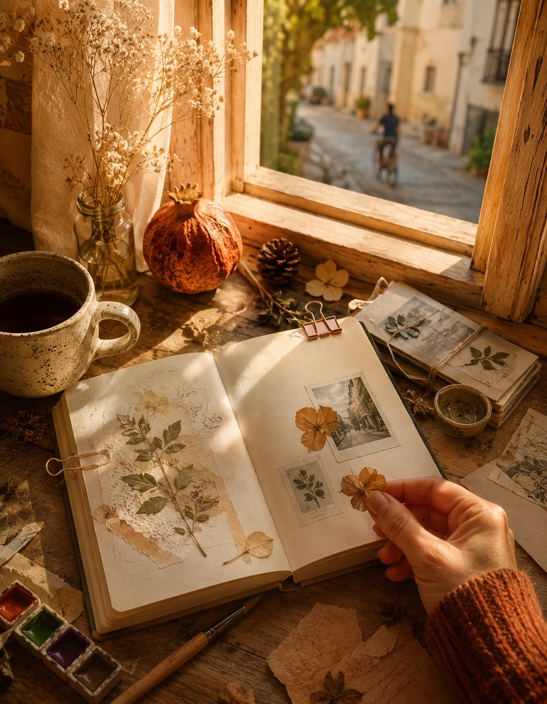
Objetos, memórias e pequenos instantes tornam-se matéria para criar, imaginar e descobrir a beleza presente no cotidiano.
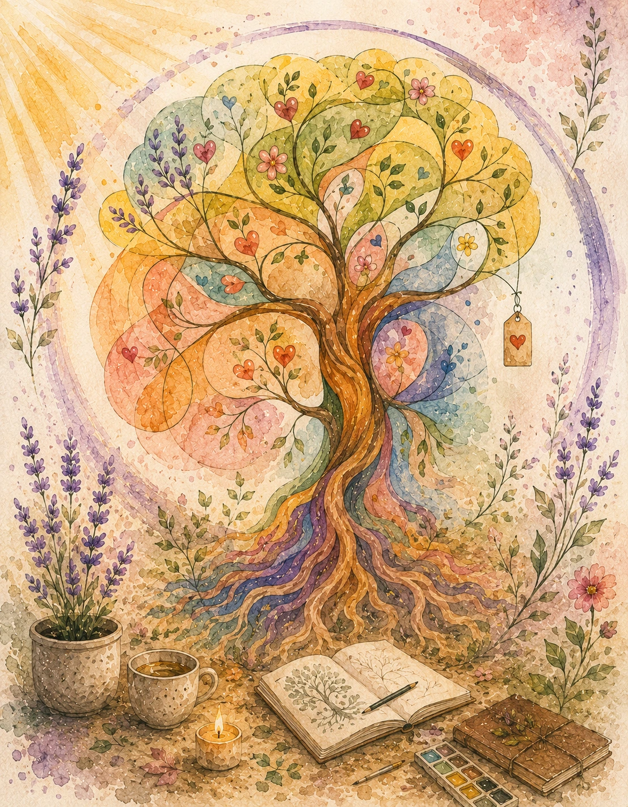
Arte, yoga e imaginação se encontram em uma experiência que cultiva calma, presença e criatividade.
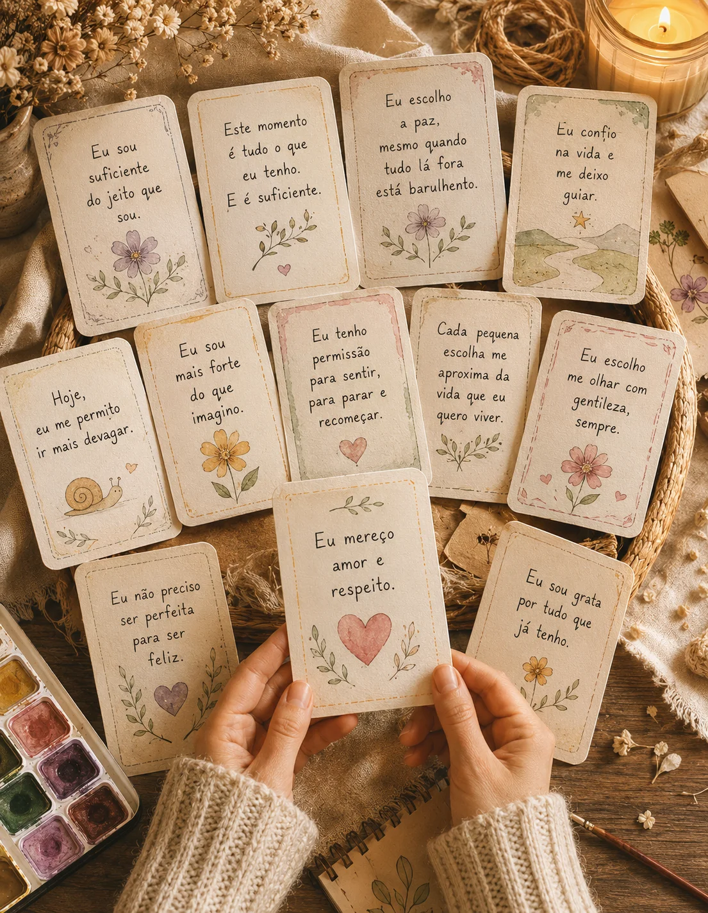
Cada participante cria cartas ilustradas com palavras de carinho para reencontrar a própria voz nos dias difíceis.
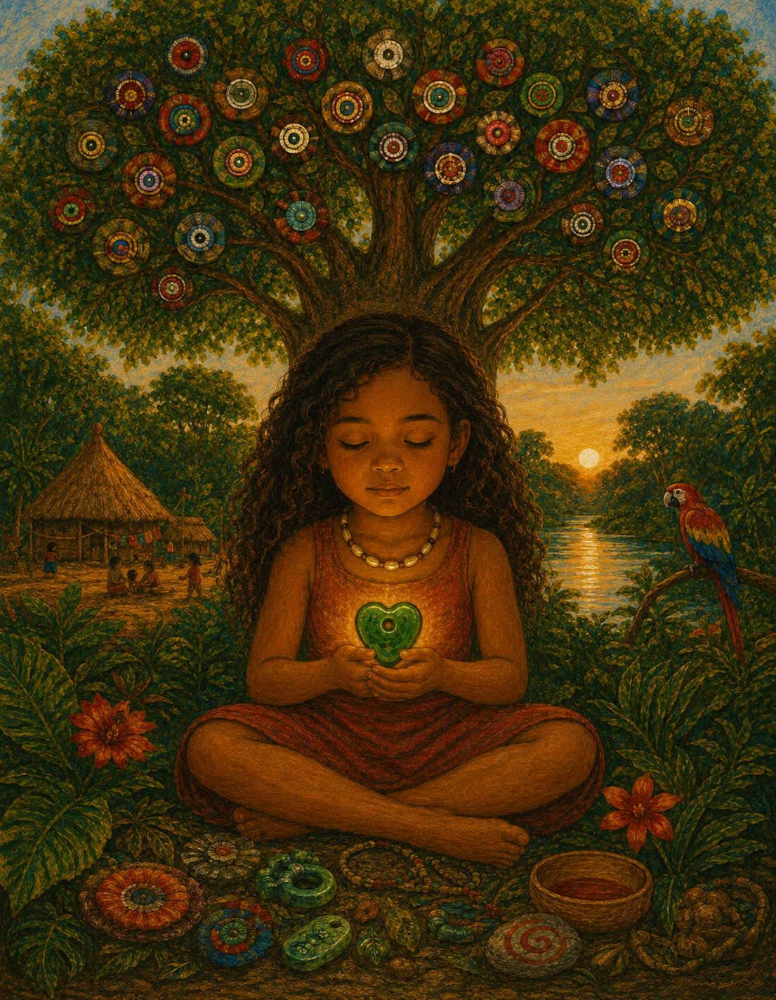
Uma vivência artística que fortalece a escuta, a empatia e o reconhecimento das próprias emoções.
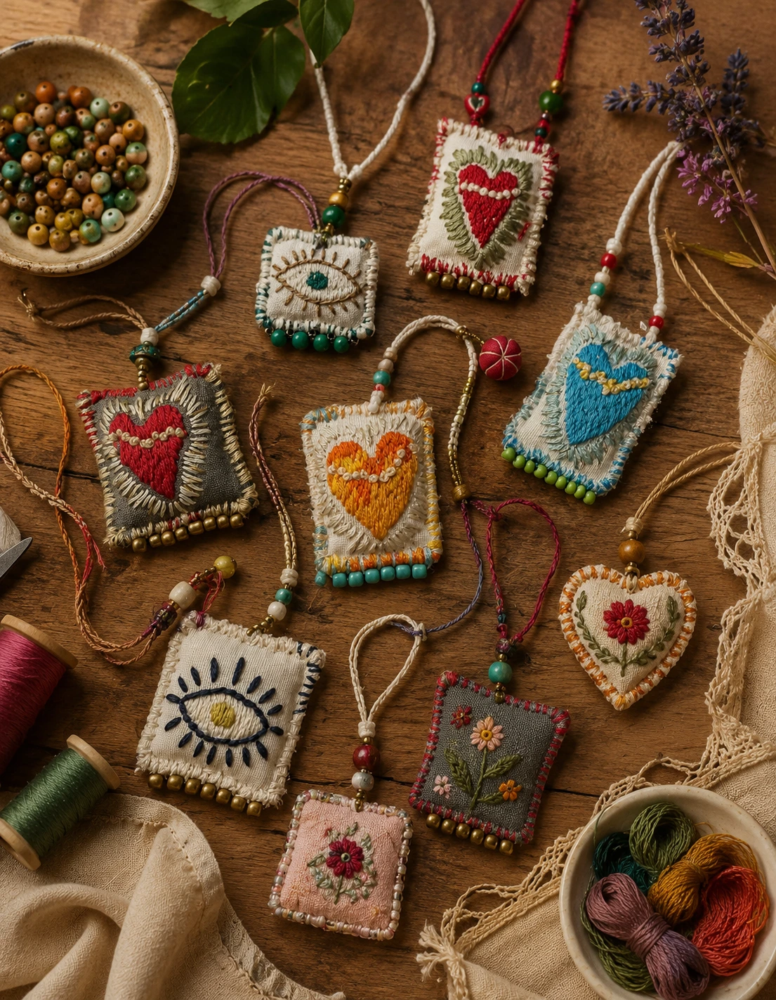
Objetos simbólicos ganham forma pelas mãos de quem cria, guardando memórias, afetos e desejos.
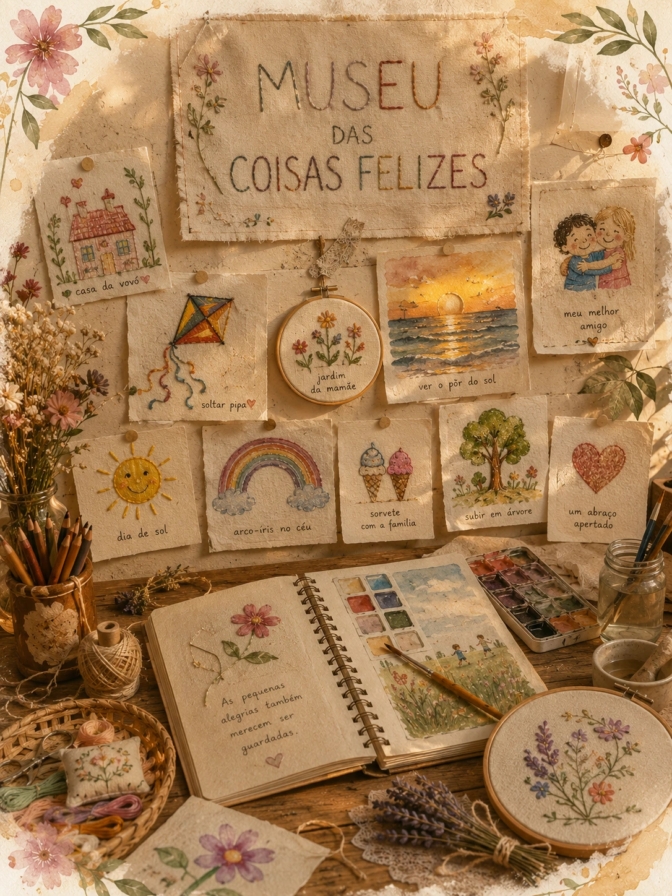
Uma coleção afetiva de objetos, histórias e lembranças que revela a beleza escondida nas pequenas alegrias.
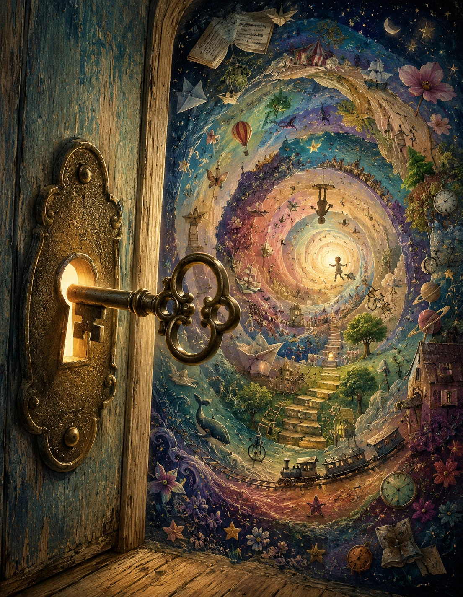
Uma experiência poética que desperta curiosidade, imaginação e novas formas de olhar para o mundo.
Uma vivência sobre identidade, pertencimento e autoestima para reconhecer o próprio lugar de florescer.
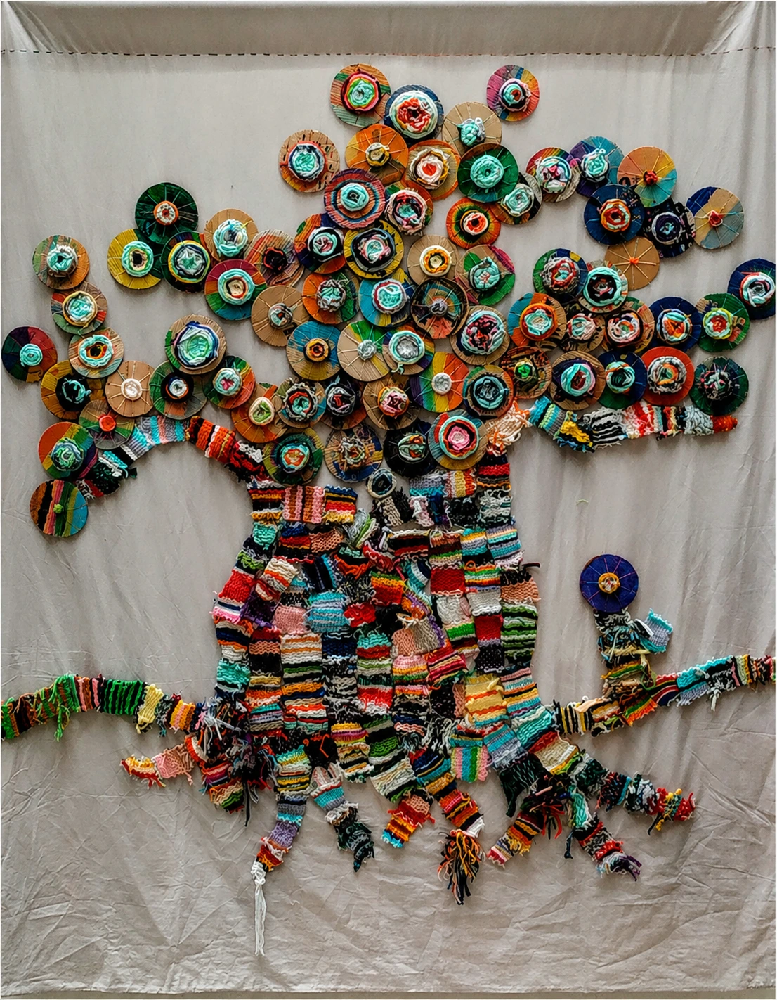
Uma instalação colaborativa onde cada participante deixa sua marca e ajuda a construir uma história coletiva.
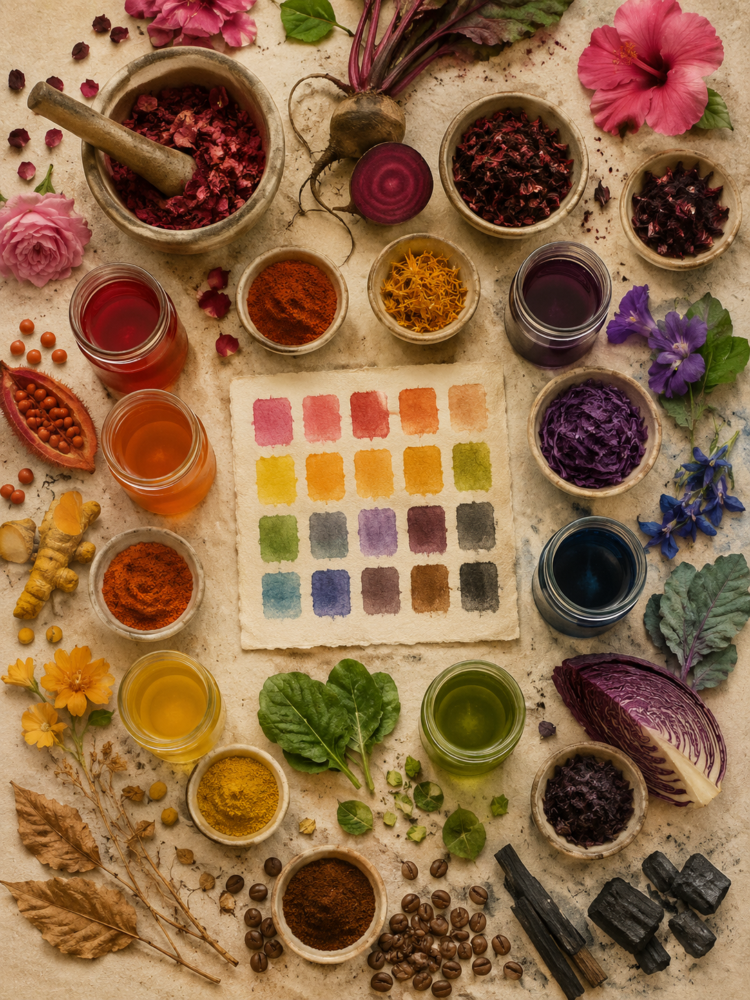
Descubra como plantas, flores e frutos se transformam em pigmentos naturais para criar pinturas inspiradas pela própria natureza.
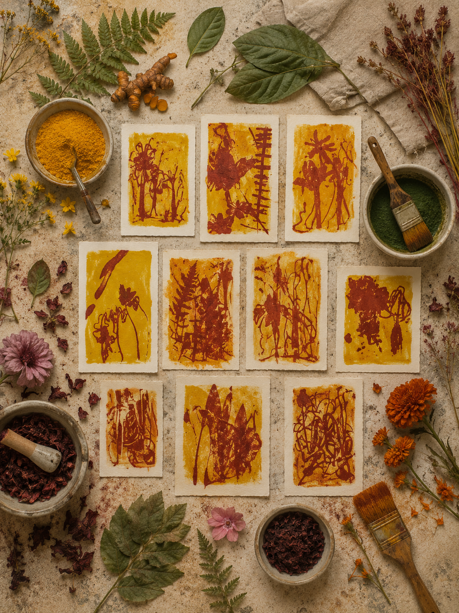
Uma experiência de criação com fototipia e impressão botânica, onde folhas e flores revelam formas, texturas e memórias impossíveis de repetir.
Cada experiência pode ser realizada com diferentes públicos, respeitando a idade, os objetivos da instituição e as características do grupo.
Cada proposta é ajustada para promover criatividade, expressão, escuta e bem-estar de forma significativa.
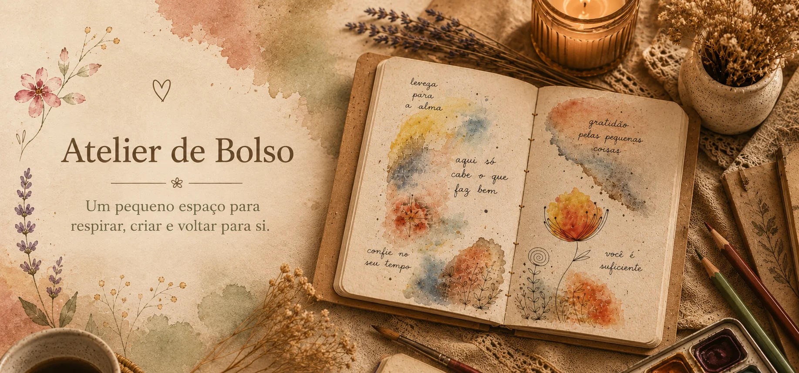
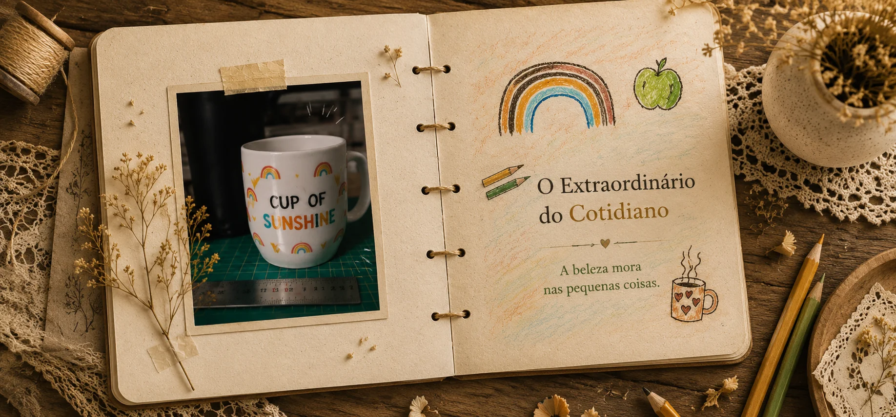
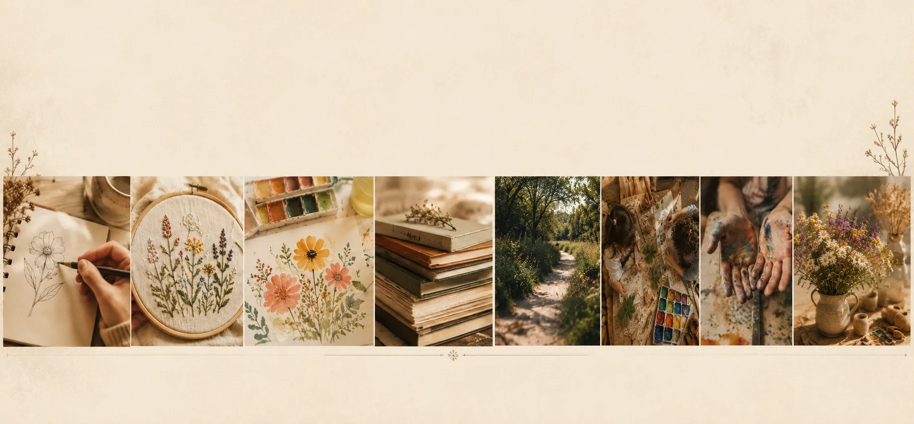
Falar comigo pelo WhatsApp